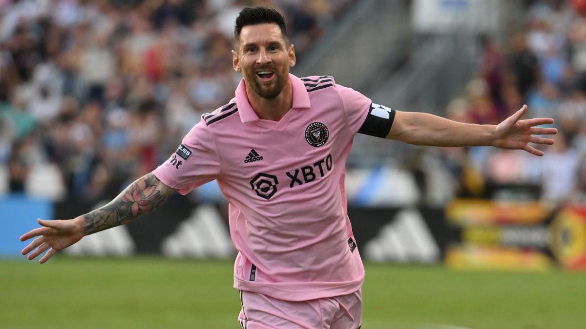
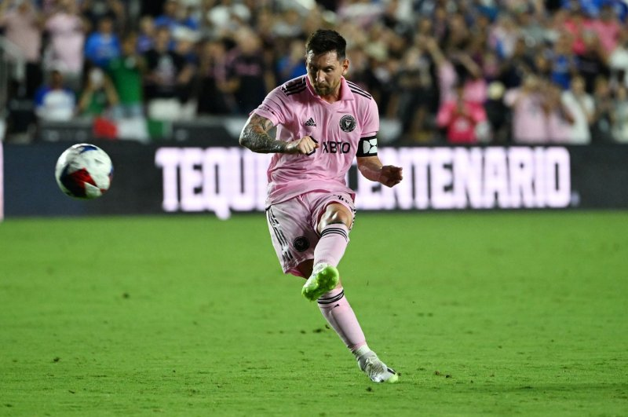

Football Times
Messi Scores Free-Kick to Win Final In Inter Miami Debut
Author: Carlos Berry
Last modified: 10-16-2023
Hint: Click on areas in the image for more information.
Nothing beats seeing Lionel Messi score one of his classic free kick goals. Fans paid hundreds to see him live, and it looks like they got their money's worth.
The beautiful game's greatest of all time, Lionel Messi, has done it again. After a somehwat difficult 2 years at Paris SG, Messi showed us why Inter Miami spent over $100 million USD to have him on their side.
A hard year at the office
After spending 2 years at Paris Saint-Germain, many were worried if Messi's career was coming to an end. See the following table of Messi's stats at PSG compared to players of a similar caliber for the 2021-2022 season:
| Player | Club | Appearances | Goals | Assists | Minutes per Goal | Minutes Played |
|---|---|---|---|---|---|---|
| Lionel Messi | Paris Saint-Germain | 34 | 11 | 15 | 261' | 2,873' |
| Kylian Mbappe | Paris Saint-Germain | 46 | 39 | 26 | 100' | 3,903' |
| Erling Haaland | Borussia Dortmund | 30 | 29 | 8 | 82' | 2,388' |
| Karim Benzema | Real Madrid | 46 | 44 | 15 | 89' | 3,919' |
| Kevin De Bruyne | Manchester City | 45 | 19 | 14 | 176' | 3,338' |
| Vinicius Jr | Real Madrid | 52 | 22 | 20 | 194' | 4,274' |
| Robert Lewandowski | Bayern Munich | 46 | 50 | 7 | 87' | 4,006' |
| Sadio Mane | Liverpool | 51 | 23 | 5 | 171' | 3,938' |
All stats gathered from www.transfermarket.us
As you can see, Messi's stats are not impressive compared to other players of a similar caliber. With the lowest goal per minute ratio, low playing time, and low assists (very unlike messi), it was clear he was not having a good time at PSG.
With unimpressive stats, and a power struggle between him and other teamates, it seemed like Messi was on his way out. However, Inter Miami had other plans.
Inter Miami's new star
After spending over $100 million USD on "La Pulga", Inter Miami made a gamble that Messi's career was in fact, not done. This gamble certainly paid off, as Messi worked wonderse against Mexican club Crus Azul in a Legends Cup match.
A quiet game
It was a relatively quiet game for Miami v. Cruz Azul. Miami was one goal up, but this would not last. In the second half Azul Crus was gaining momentum, and the horizon didn't look good.
Messi enters the chat
Eight minutes into the second half the crowd roared. If you weren't paying attention, you may be wondering why, as nothing significant had happened, yet. Miami was winning 1-0 and the play was dead. However, if you kept listening, you would hear the crowd chanting - "Messi!.. Messi!.. Messi!". It was time for the GOAT to take to the pitch.
Messi reminds us why he's the seven-time Ballon d'Or winner
After an uneventful second half, the game was coming to a close of regular time. Crus Azul had equalized, and up until now, Messi was unable to tip Miami over the edge. However, in the 91st minute, with zero minutes to spare, Inter Miami pushed one last time for a last-second attack. With only 4 attackers against 8 defenders, it look impossible for Miami to break through, but thats when Messi does what he does best. After receiving a pass from #17 Jose Martinez, an agressive tackle on Messi allowed him to draw a foul, being awarded a free kick about 22 meters from goal.
With over 2 full-sized school bus lengths between him and the goal, it looked like a longshot, but Messi had done this many times before. And in the 94th minute Messi lines up the ball, takes aim, and hammers the ball into the top-left shelf of the goal - well beyond the outstretched goalkeepers reach. He had done the unthinkable once again!
With no time left, the referee called an end to the match, fans roaring and Crus Azul players heartbroken. It was a true spectacle, and reminded us why Lionel Messi is the greatest of all time.
Terms used in this article:
- La Pulga
- Spanish for "The Flea", a nickname given to Messi due to his small stature and agility.
- GOAT
- Acronym for "Greatest of All Time"
- Ballon d'Or
- French for "Golden Ball", an award given to the best player in the world each year.
- Enters the chat
- A humorous term to describe the summoning of a person with a significant relations to a given topic.
| Position/Club/Nationality | Forward | Inter Miami CF | Argentinian | ||||
| Personal Details |
|
Preferred Foot | Left | ||||
| Major Achievements | FIFA Ballon d'Or Wins | World Cup | Copa America 2021 |